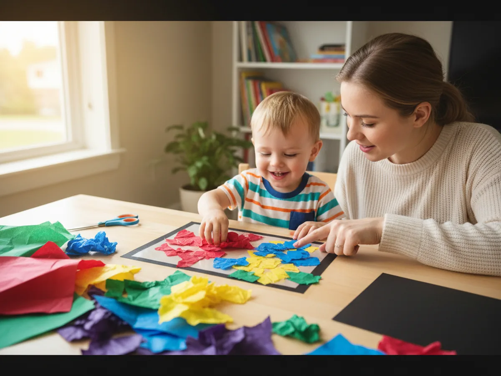
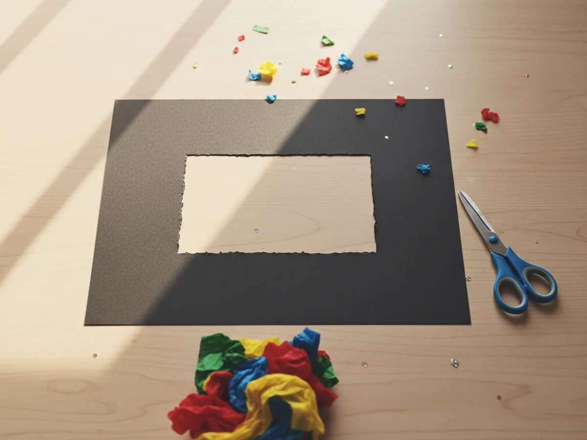
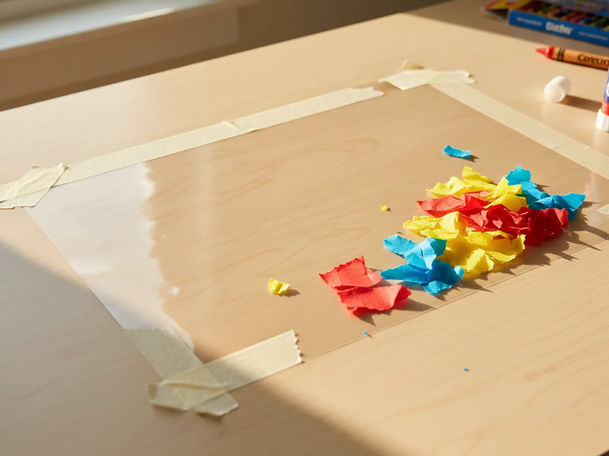
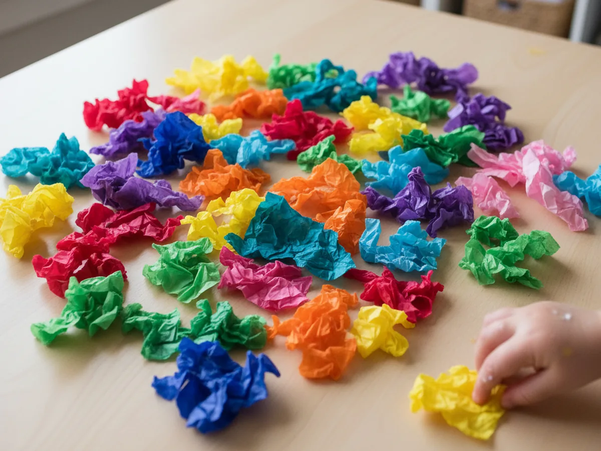
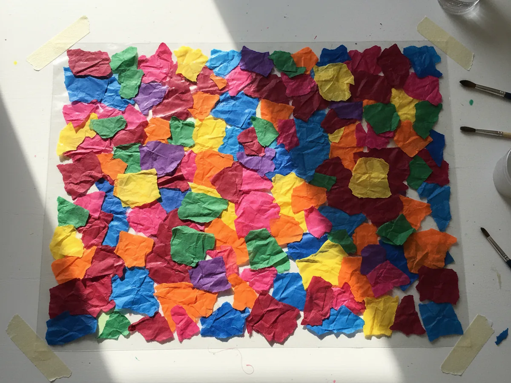
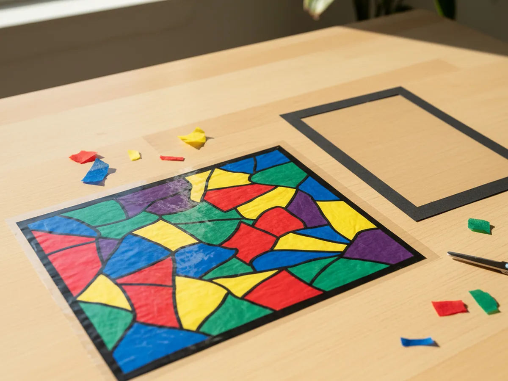
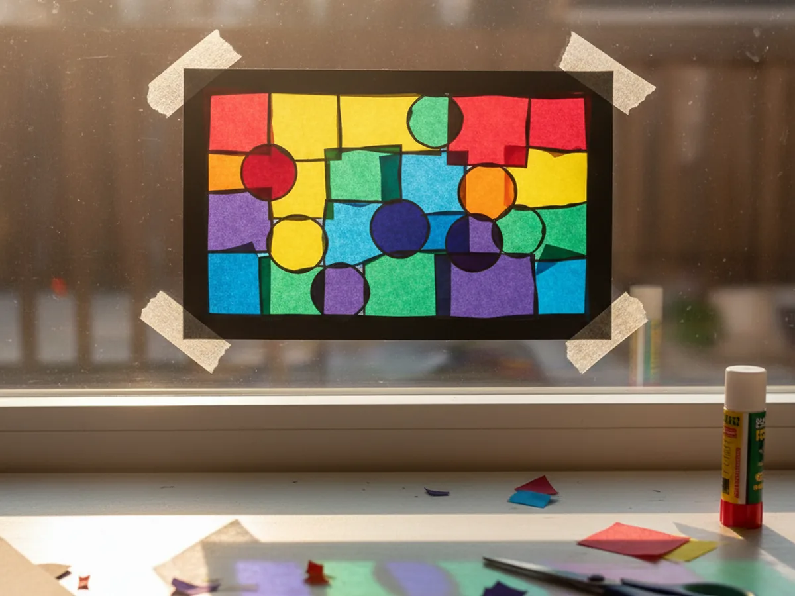

Published on April 12, 2026

A stained glass tissue paper craft is one of the most magical projects you can make with a young child. You press a handful of colorful tissue paper pieces onto sticky contact paper, add a black cardstock frame, and suddenly you have something that looks like real stained glass glowing in your window. The result is genuinely stunning, and the whole activity takes about 30 minutes. 🌈
What makes this craft so perfect for young kids is that there are no complicated steps and very little mess. There is no paint to dry, no glue to spill, and no special skills needed. The sticky contact paper does most of the work, and your child gets to do the most satisfying part: tearing and pressing all those cheerful tissue paper colors into place.
Whether you make it as a rainy afternoon activity, a spring window decoration, or a beautiful gift for a grandparent, this stained glass tissue paper craft is a project that always gets a "wow" from everyone who sees it hanging in the light.
There is something genuinely irresistible about tearing paper into pieces and pressing them onto a sticky surface. For young children, the sensory experience of pulling colorful tissue paper apart and watching the pieces stick exactly where they press them is both satisfying and empowering. The whole process feels like play, not work.
The layering is the secret magic. When kids overlap a yellow piece and a blue piece, they discover a new green patch underneath. When red and yellow meet, orange appears. This kind of hands-on color discovery sparks real curiosity and makes the activity feel like a little science experiment as much as a craft. ✨
And then there is the payoff moment. When the finished stained glass tissue paper craft goes up in the window and the light filters through all those colors, kids absolutely light up. The result looks far more impressive than the effort required, which means both you and your child get that wonderful shared feeling of "we made something beautiful." For children ages 3 and up, this craft builds fine motor skills through tearing and pressing, and it rewards every child with a genuinely gorgeous finished piece no matter how they arrange the colors.

Here is everything you need to make this stained glass tissue paper craft at home.
These steps are easy to follow at any pace. Little ones can get involved at every stage, and nothing needs to be perfect to look beautiful.
Fold a sheet of black cardstock in half. Use scissors to cut a simple shape from the center of the folded paper, leaving a border of at least an inch all around. A classic rectangle window shape works beautifully, but you can also cut an arch, a heart, a diamond, or any shape your child loves. When you unfold the cardstock, you will have a frame with a window opening in the middle. This dark border is what gives your stained glass tissue paper craft its beautiful cathedral look. Adults should handle the cutting for young toddlers, while children ages 5 and up can try cutting the interior shape with supervision.

Cut a piece of clear contact paper slightly larger than the opening in your cardstock frame, about an inch wider on each side. Peel off the backing and tape the contact paper to your work surface with the sticky side facing up. Use a few small pieces of tape along the edges to keep it flat and stable while your child works. This sticky surface is the canvas where all the tissue paper magic happens. The tape prevents it from curling up or shifting around, which makes the experience much smoother for little hands.

Let your child tear the colorful tissue paper into small irregular pieces, roughly one to two inches each. You do not need neat shapes. Uneven, torn edges actually look more beautiful in the finished craft than perfectly cut squares. Hand your child several different colors and let them tear freely. This step is wonderful for toddlers because tearing paper is a satisfying sensory activity they can do completely independently. A little pile of mixed colors on the table is a good sign that you have plenty to work with. 🎨

Help your child press the torn tissue paper pieces directly onto the sticky surface of the contact paper. Encourage them to cover the entire surface and to overlap colors freely. Where a yellow piece and a blue piece overlap, a soft green will appear when held up to the light. Where red meets yellow, warm orange blooms. This layering is what makes the stained glass tissue paper craft look so luminous and rich. There is no wrong way to arrange the pieces. The more colors overlapping, the more beautiful the finished panel will be. Keep going until the sticky surface is fully covered.

Once the contact paper is fully covered with tissue paper, cut a second piece of contact paper the same size. Peel the backing off and carefully press it sticky-side-down on top of the tissue paper layer. Start from one edge and smooth it down gradually to avoid large air bubbles. Press firmly all over with your hand. The two layers of contact paper now sandwich the tissue pieces securely in between. Trim any uneven edges with scissors so the panel is neat and clean. Your colorful panel is now sealed and ready to frame.

Apply a thin line of glue or strips of double-sided tape along the back edges of the black cardstock frame. Press the frame firmly onto the front of the sealed tissue paper panel, lining up the window opening over the colorful center. Hold it in place for a few seconds. Trim any contact paper that extends beyond the outer edges of the frame. Now tape or hang your finished stained glass tissue paper craft in a sunny window and watch the light make every color come alive. The effect is genuinely breathtaking for such a simple craft. ✨

Seasonal Shape Frames: Instead of a plain rectangle, cut your black cardstock frame into a seasonal silhouette such as a pumpkin for fall, a snowflake for winter, a flower for spring, or a sun for summer. The colorful tissue paper inside any shaped frame looks stunning in a window and makes the craft feel extra special for the time of year.
Wax Paper Version: If you do not have contact paper on hand, you can achieve a similar effect using two sheets of wax paper. Brush a thin layer of diluted white glue onto one sheet, lay tissue paper pieces on top, then place the second sheet over it and smooth it down. This version takes longer to dry but creates a softer, more painterly glow.
Rainbow Gradient: For older kids ages 5 and up, try arranging the tissue paper in a true rainbow order: red pieces on one side, then orange, yellow, green, blue, and purple, blending gradually across the panel. When it hangs in a window, the rainbow gradient looks absolutely gorgeous and teaches color sequencing at the same time.
This stained glass tissue paper craft is one of those activities that surprises you with how beautiful it turns out. The supplies are simple, the steps are short, and young children can do most of the work completely on their own. But the finished result, glowing with color in a sunny window, genuinely looks like something you would find in a boutique or a classroom art show.
The best part is the moment your child sees it in the window for the first time. That little gasp of delight is completely worth it. Give it a try and enjoy every colorful moment together.
If your child loved working with tissue paper, these related projects are a wonderful next step.
Happy crafting, and enjoy every bright, colorful moment with your little one.